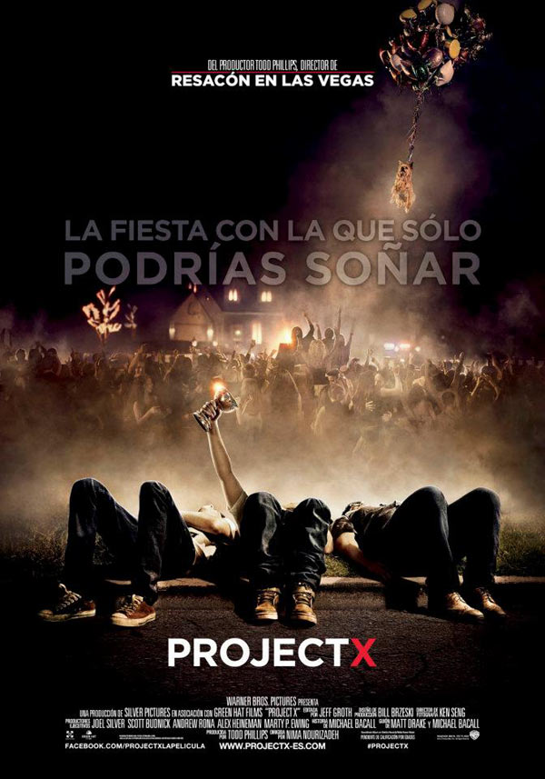

PEL·LICULES DESTACADES

Antología de humor negro en la que cuatro historias distintas abordan una serie de peligros inevitables que tienen lugar en el metro de la India
Tres estudiantes de un instituto deciden organizar una fiesta salvaje en casa de uno de ellos, promocionándola en las red es sociales como la fiesta más loca de la temporada. Además, los chicos deciden grabarla para luego colgarla en la red.

Baby (Ansel Elgort), un joven y talentoso conductor especializado en fugas, depende del ritmo de su banda sonora personal para ser el mejor en lo suyo. Cuando conoce a la chica de sus sueños (Lily James), Baby ve una oportunidad para abandonar su vida criminal y realizar una huida limpia.